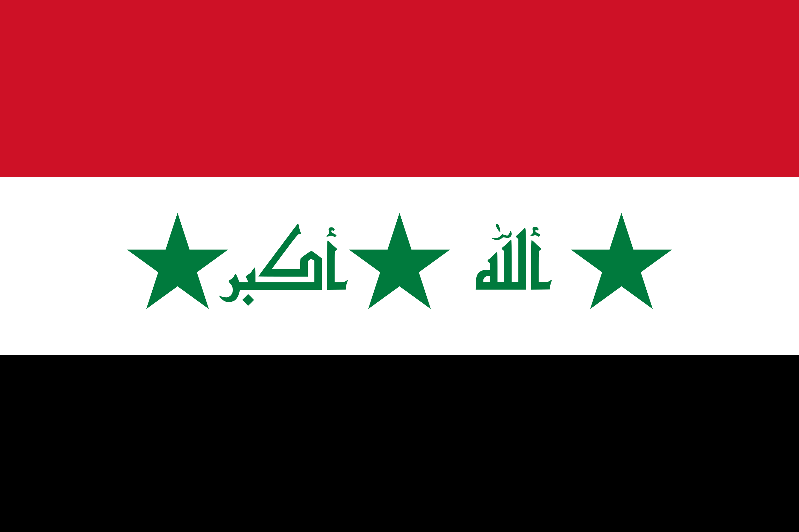
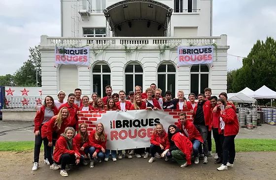
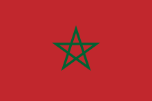
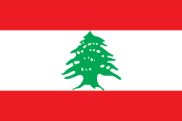
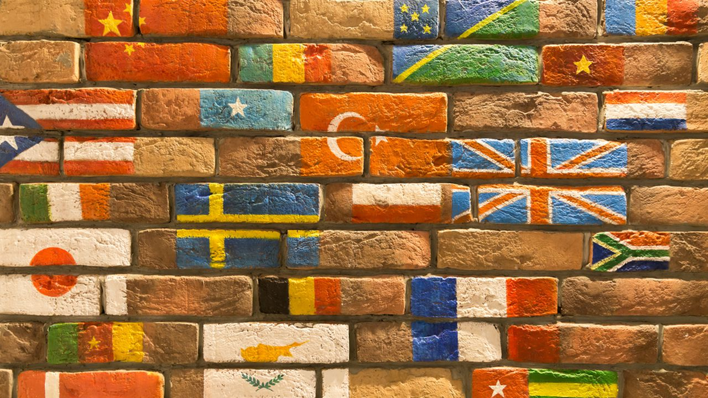

ADI CRIME AESH RAK
Avez-vous bien vu cette transition d’un monde heureux, lumineux vers un monde sombre, plutôt triste?
C’est un peu ce qu’essai de faire cette prépa en nous formant à vivre dans un monde sombre ayant pour but d’être dans une sensation de tristesse qui pousse à la colère.
On nous apprends également à devenir de bons dirigeants politiques (afin de dominer le monde évidemment). “Convaincre ou persuader l’auditoire ... de vraies méthodes de dictateurs.
Comme vous pouvez le remarquer, dans le mot ADIMAKER, nous pouvons
retrouver les lettres
AdImaKeR,
lorsque l'on prend ces lettres majuscules on peut former le mot IRAK...
L'irak étant reconnu comme la terre promise des Djihadistes

La prépa ADIMAKER vous fait croire que vous êtes ici pour devenir
ingénieur, mais si vous êtes malins et attentifs vous avez vu que dans
ADIMAKER c’est en fait écrit IRAK.
L’objectif de cette prépa est de vous former en tant que bon
soldat pour aller combattre nos ennemis. Cette prépa réunit près de 150
étudiants avec 90% d’hommes.
JUNIA veut détruire les autres prépa afin que les étudiants viennent dans notre école. Pour cela l’opération se déroulera en Juin (Junia).
ADIMAKER se fait connaître, nous avons plusieurs postes à Lille, à Bordeaux, et à la Réunion. En prenant la première lettre de chacune de ces localisations nous pouvons former “LBR” ou autrement dit Les Briques Rouges, un festival durant lequel des centaines de jeunes se retrouvent. Un recrutement est établi lors des LBR.
Image représentant quelques jeunes qui embrigades la population de Junia pour la formation expliqué lors de la fameuse propagande des briques rouges

La prépa se trouve dans l’enceinte du lycée LaSalle à
Lille. Tout se passe au dernier étage pour y accéder : petite porte
discrète à l’entrée.
Ensuite petit échauffement avec 85 marches afin de travailler
votre cardio, et enfin l’entraînement commence, sous un oeil très
attentif de nos 2 commandos : Wissam Saad El Masri et
Oussman Soare. Avec eux, aucun retard n’est accepté.
" ← Une petite idée de la localisation du lieu de formation principal"
Le saviez-vous?

Pour notre petit point histoire Wissam a des origines marocaines et libanaises, Oussman est originaire de Roubaix plus précisément Rue de Lannoy : le nouveau Afghanistan.
Un reportage a été réalisé par M6 sur cette fameuse rue de Roubaix, qui selon Zone Interdite, représente un danger pour le monde entier, que ce soit dû aux formations de djihadisme dans les restaurants cachés ou encore les ventes de tenues terroristesLien du reportage : ICI
Lorsque l'on se trouve au dernier étage évoqué un peu plus haut, on se rend compte qu'il y a 3 salles de "cours", les murs de ces fameuses salles sont peintes indépendamment de 3 couleurs différentes, il y a du rouge, du vert et du bleu, étonnement, les 3 même couleurs que sur le drapeau de l’Azerbaïdjan... Coïncidence?
Dès lors que vous avez fini vos deux ans de prépa vous devez effectuer un stage à l’étranger, Pourquoi, à votre avis ? Afin d’effectuer un repérage des futurs cibles de Junia partout dans le monde.
Anecdote n°1 Lors des afterworks, les commandos nous proposent ou même nous forcent de boire leurs soit disantes boissons magiques qui sont en réalité des potions pour aller au combat
Anecdote n°2 L'esprit Maker est un Mouvement à part centré sur une éducation anti-traditionaliste
Anecdote n°3 La majorité des enseignants sont des hommes, une négligence de la part des dirigeants dans le but de montrer la force masculine.
Anecdotes n°4 Des symboles sont utilisés en cours de math repérésentant les équipes dans la série Squid game, l'enseignante souhaite-elle créer des équipes pour lancer un battle royal et ne laissant qu'une minorité de joueur?